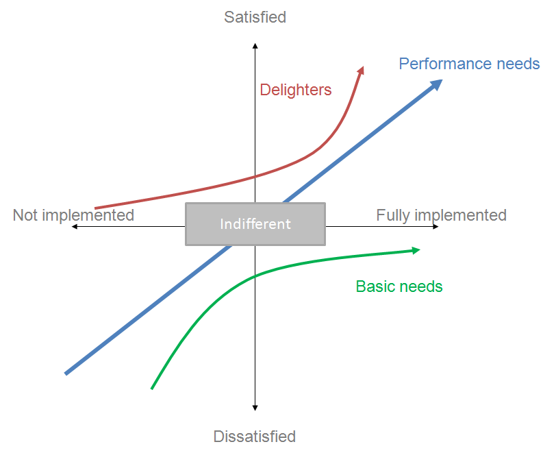
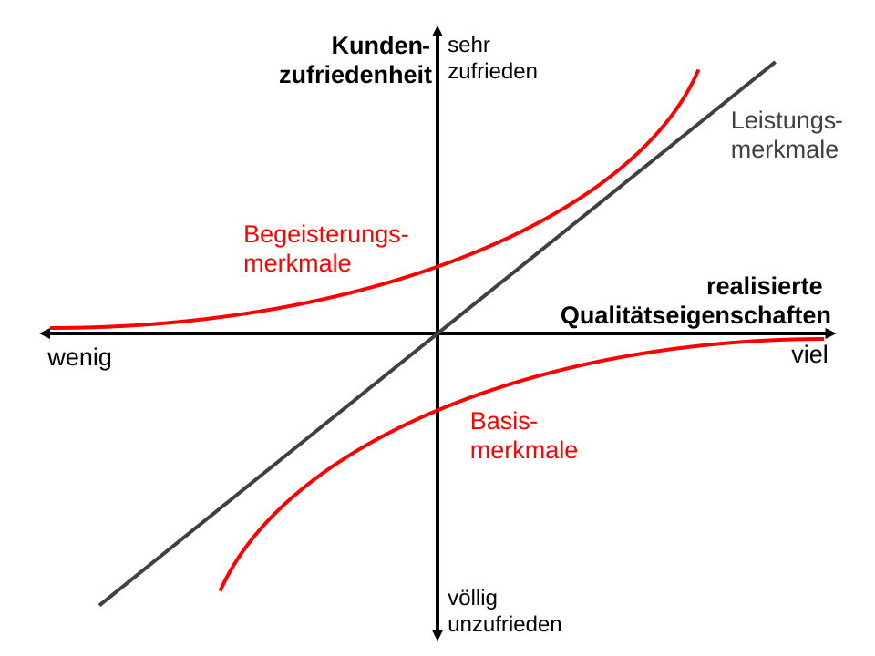
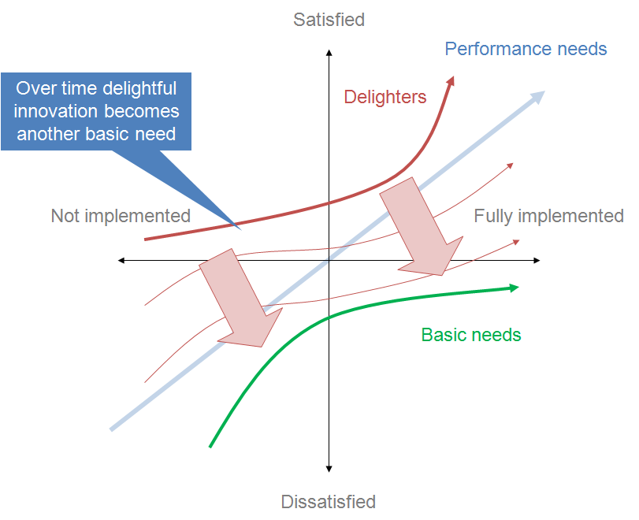
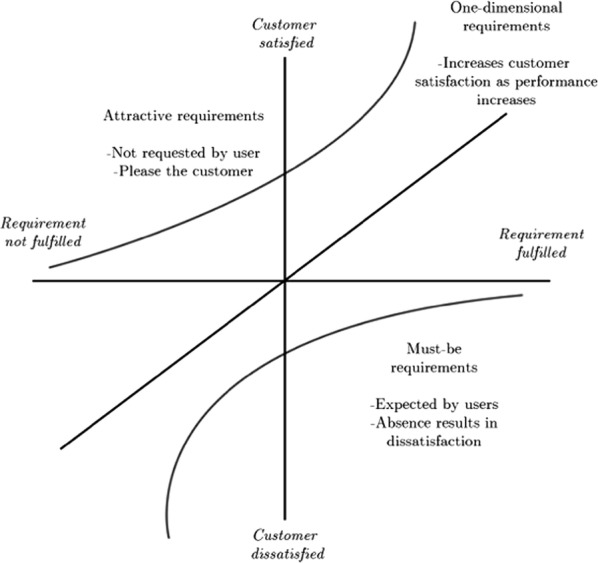
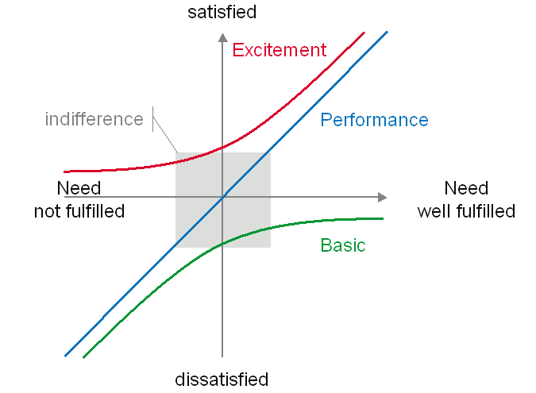

Kano model plot
About
A Kano model plot positions product features on two axes: the horizontal axis is how fully a feature is implemented, and the vertical axis is the user satisfaction it produces. Features fall into categories defined by the curve they follow — must-be (basic expectations whose absence frustrates but whose presence is unremarkable), performance (satisfaction rises linearly with investment), attractive (delighters that surprise and please but aren't expected), plus indifferent and reverse features. The categories come from a specialized paired-question survey, making Kano a rare bridge between quantitative survey data and prioritization judgment.
When to use
Use a Kano model plot when prioritizing a feature set and you have — or can run — the functional/dysfunctional Kano survey. It is especially valuable for separating the basics you must simply get right from the differentiators worth real investment.
When not to use
Do not assign Kano categories by intuition; without the survey data the plot is just opinion in a coordinate system. Remember too that categories drift — today's delighter becomes tomorrow's expectation — so a Kano study should be repeated periodically rather than treated as permanent.
References
Examples
Click any example to view full size and visit the original source.




